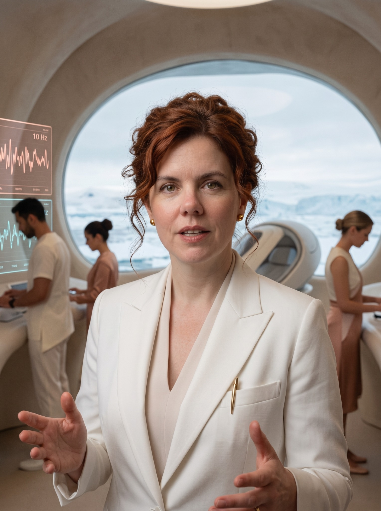
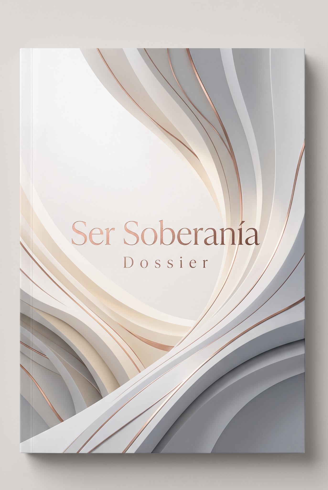

01
Protocolo de admisión
Fase de elegibilidad, criterios y cuestionario descritos en el documento del proyecto.
Abrir protocolo ↗
Un dossier sobre identidad, autonomía y el imaginario de una instalación de investigación en la Antártida.

La narrativa de Ser Soberanía sitúa a Barbara al frente de un proyecto que explora, desde una perspectiva especulativa, la relación entre arquitectura, conciencia y percepción del tiempo.
Este espacio reúne los materiales visuales y documentales del proyecto. Las afirmaciones extraordinarias presentes en los documentos se presentan como parte de su universo narrativo, no como hechos científicos verificados ni como tratamiento médico.

El dossier y el informe de investigación reúnen el lenguaje, las hipótesis y el marco conceptual de Ser Soberanía. Consultá el documento completo para conocer su estructura y terminología.
Consultá los materiales de admisión y responsabilidad antes de continuar. Los documentos se abrirán en una pestaña nueva.
Fase de elegibilidad, criterios y cuestionario descritos en el documento del proyecto.
Abrir protocolo ↗Documento de consentimiento y declaración de responsabilidad incluido en el dossier.
Abrir acuerdo ↗Informe conceptual sobre la singularidad geográfica y la neuroarquitectura del proyecto.
Abrir informe ↗Nota: el contenido de los documentos incluye conceptos especulativos. No constituye evidencia científica validada, evaluación clínica ni recomendación de salud.